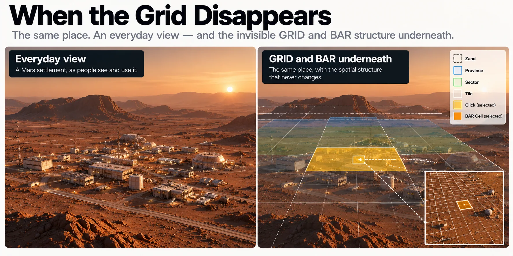

When the Grid Disappears
Infrastructure That Becomes Ordinary
Imagine Mars after the exciting part.
Not the first landing, the first permanent habitat or the first child born there. Those moments will deserve books of their own. Imagine instead an ordinary Tuesday in a mature Martian city.
A replacement pump is delivered to a maintenance depot. A technician summons a rover to an equipment bay. A parent checks where a school transport has stopped. An ambulance is dispatched to somebody who has collapsed inside a public building. A construction crew requests another load of aggregate. Two friends arrange to meet after work.

Read a description of this illustration
Matlas can remain behind operational applications. A resident may use a familiar local name and a machine may use a precise machine address while both ultimately refer to the same persistent underlying surface location.
Locations are being exchanged all day. Almost nobody is thinking about Matlas.
That would be a very good sign.
The address moves underneath
Consider the replacement pump.
The person ordering it probably does not enter a Quad, Zand, Province, Sector, Tile, Click, Court and Cell. They choose the maintenance depot from an application, reuse a saved destination or select the receiving point shown on a map. Somewhere beneath that interface, software resolves the request into the exact location required by the logistics system.
There may be a BAR identity underneath. That location necessarily belongs to a GRID Click and the hierarchy above it. If a human fallback is needed, Triplet may be available. None of that needs to appear on the screen.
The user wants a pump delivered to the right receiving point. That is the job.
This is a transition successful infrastructure makes sooner or later. At first, people consciously use the new system because the system itself is novel. Once it becomes dependable, other systems absorb it. What was once an interface becomes plumbing.
The geography does not vanish. The need to think about it does.
Emergency response makes the same point with less room for bad interface design.
Someone collapses inside a large industrial complex. The caller may know the building and say they are beside the western pressure door. Their wearable may already hold a more exact position. The building system may know which entrance provides the quickest access.
The dispatcher should not need to ask:
Please provide your canonical BAR identifier.
The software should resolve whatever useful information already exists into the destination needed by the response team. The caller talks like a frightened human being. The emergency systems do the translation.
If the ordinary interface is unavailable or ambiguous, the canonical address remains there underneath as a fallback. Its value lies partly in being available without requiring everybody to speak in protocol.
A mature Matlas should therefore become something people rely on more often than they consciously operate.
The city map wins
The most visible evidence of that transition will probably be the map.
The diagrams in this book have deliberately exposed Matlas. We needed to see the Quads, Zands, Provinces, Sectors, Tiles and Clicks because the structure itself was the subject. Then we zoomed below Click into Courts and Cells because BAR was the subject.
A mature city map should do almost the opposite.
It should show what somebody needs in order to use the city: routes, transport, habitats, hospitals, loading areas, schools, public spaces, industrial sites, airlocks and whatever else everyday Martian settlement eventually requires. GRID lines should normally be absent.
That is not because they have ceased to matter. It is because something more useful has been drawn above them.
A technical user might turn GRID back on. An engineer inspecting an asset might expose its BAR identity. Software exchanging data between organisations might carry canonical spatial references throughout the transaction. But those are layers and functions, not the default experience of the place.
The map has stopped showing the infrastructure because the city has become more interesting than the system used to reference it.
Let software carry the complexity
Behind that ordinary city map there may be a surprisingly busy chain of spatial translation.
A person selects a destination. The application resolves it to a precise location. That may be represented internally as BAR, related upwards into GRID, converted into another spatial index for routing and eventually expressed in whatever local frame the vehicle itself uses for final navigation.
Written out like that, it sounds exhausting. Good software should make it boring.
The person sees:
Maintenance Depot — Receiving Lock 3
The rover goes there.
This is one of the stronger reasons for having a stable common layer underneath different systems. It allows interfaces to become simpler without requiring the underlying organisations and machines to become identical. The user does not need to understand the conversion path any more than somebody sending a message needs to understand packet routing.
The complexity still exists. It has moved to the place where it can be handled repeatedly and consistently.
That is where infrastructure belongs.
A resident should not need to understand Court subdivision to report a fault. A visitor should not need to learn M3B before calling transport. A dispatcher should not have to reconstruct the GRID hierarchy during an emergency. People should be able to state their intent in the form most natural to the task, while the systems underneath know enough to do the rest.
Machines may see more of Matlas than people do
There is a good chance that Matlas never becomes equally invisible to machines.
Nor should it.
Autonomous vehicles need deterministic destinations. Maintenance databases need stable spatial keys. Logistics systems need to exchange precise locations between organisations. Robotic surveys need to associate measurements with persistent pieces of surface. For these systems, the formal structure is useful rather than inconvenient.
A machine does not mind that an asset occupies a particular Cell inside a particular Click. It does not prefer a colourful description of the loading bay. It values the same identifier resolving to the same location every time.
That creates a productive asymmetry. Humans can work through increasingly convenient interfaces; machines can continue using the formal substrate directly.
A person chooses the receiving lock. The logistics platform resolves the BAR Cell. A regional system can recover the surrounding Click or Sector. The delivery vehicle may finally convert the destination into its own local navigation frame.
Different representations, same place.
This may be the mature state of Matlas: conspicuous in machine systems, occasionally exposed to specialist humans, and largely absent from ordinary life. Infrastructure does not need equal visibility to every user. It needs to appear where it helps.
Failure brings it back
Hidden infrastructure has one dependable habit: it becomes visible when something goes wrong.
If two applications resolve the same destination differently, somebody will suddenly care about the canonical identity beneath them. If an emergency system sends responders to the wrong location, the boundary and conversion rules will stop feeling abstract. If two organisations cannot interpret one another’s references, the common layer they had previously ignored becomes extremely interesting.
That is normal.
Most people do not think about character encoding while typing a message. They notice it when the text becomes gibberish. They do not think about packet routing while a call works. They notice networking when it stops. The same relationship should hold here.
Ordinary invisibility is only possible because the layer underneath is unusually explicit. If users rarely need to think about the spatial machinery, implementations have to agree about it with considerable precision.
The simplicity above is purchased by discipline below.
When everything works, the conversions pass unnoticed. When something fails, the infrastructure briefly returns to view. The desirable outcome is not for everybody to become an expert in Matlas. It is for the fault to be corrected and the infrastructure to become boring again.
Boring is the destination
There is an odd lifecycle to infrastructure.
At invention, everybody talks about the system itself. During implementation, attention turns to interfaces, compatibility and migration. Once the thing works reliably, interest moves elsewhere.
That can feel anticlimactic if you designed it. It is usually success.
A location architecture that continually demands attention is probably imposing itself on the activity it was supposed to support. Perhaps users have to understand the machinery to compensate for poor software. Perhaps organisations disagree about references. Perhaps the common layer has become another source of friction rather than removing one.
The mature version should look much less impressive.
A pump reaches the right airlock. A maintenance rover finds the failed equipment. An ambulance arrives at the correct entrance. A city map shows the city. Several organisations exchange precise locations without anybody scheduling a meeting about geography.
Nobody reads out a forty-four-bit identifier. Nobody discusses MRR-1. Nobody says M3B.
The systems simply agree.
That is not Matlas being forgotten. It is Matlas no longer requiring attention in order to do useful work.
The grid remains underneath.
It disappears from attention because the city above it has become richer than the technical system beneath it.